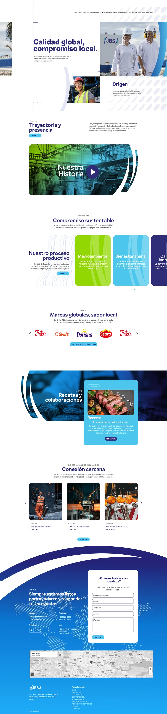
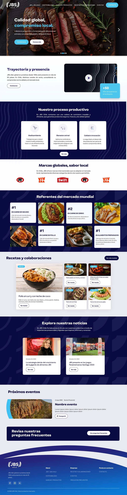
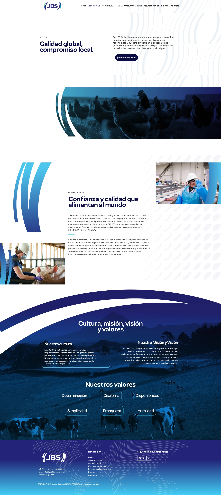
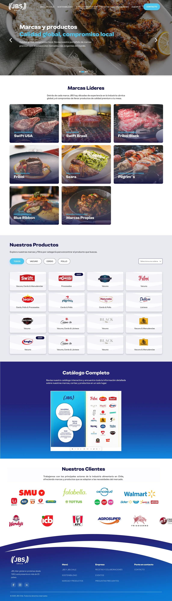
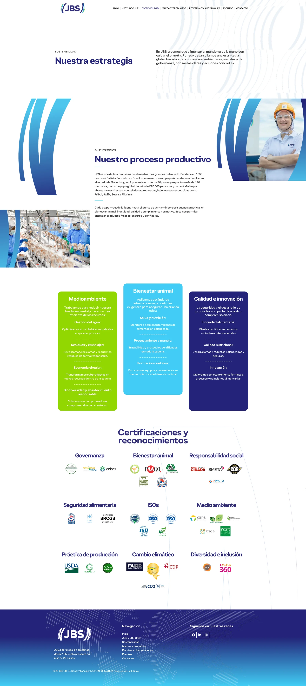
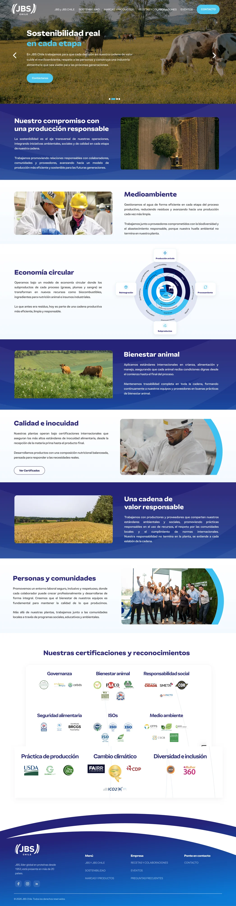
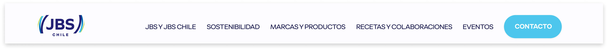
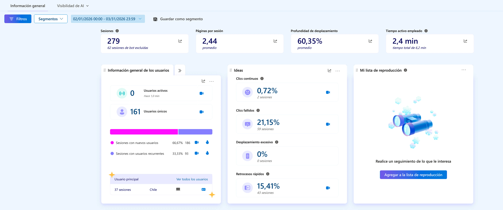
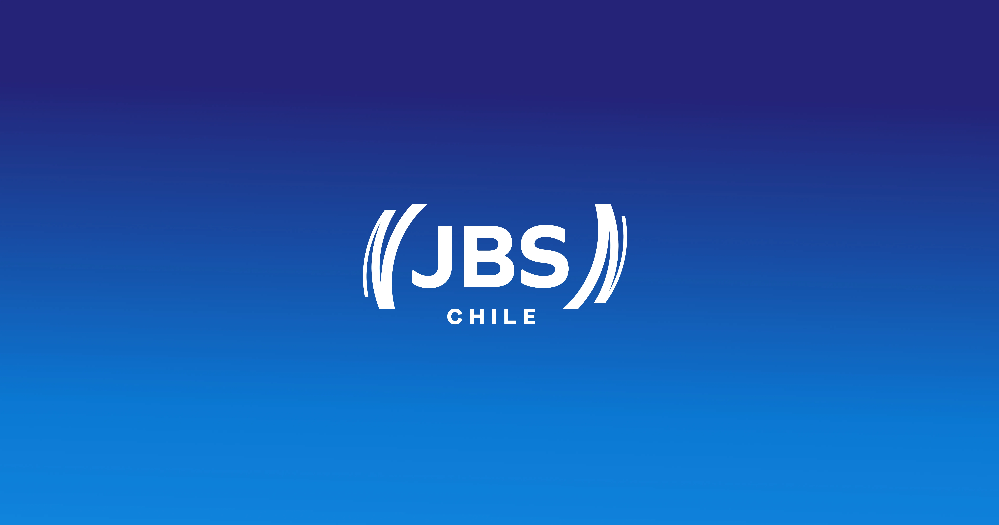

Contexto
Descripción del encargo
JBS es una de las empresas alimentarias más grandes del mundo, presente en Chile a través de marcas como Super Pollo, Agrosuper y Do Boi, entre otras. El encargo consistió en la mantención y evolución continua del sitio web de JBS Chile — no como un rediseño puntual, sino como un proceso de mejora iterativa basado en datos de comportamiento de usuario. El objetivo fue identificar fricciones reales en la navegación y resolverlas de forma progresiva, sección por sección, priorizando según impacto en la experiencia y en la conversión.
Análisis con
Microsoft Clarity
El proceso de mejora comenzó con un análisis sistemático del sitio usando Microsoft Clarity — herramienta que entrega mapas de calor, grabaciones de sesiones y métricas de comportamiento. Los datos del primer período (febrero–marzo 2026) revelaron patrones concretos de frustración: un 21,93% de clics fallidos, un 13,90% de retrocesos rápidos y apenas un 1,07% de clics continuos. Estos números indicaban que los usuarios no encontraban lo que buscaban y que la estructura del sitio no comunicaba correctamente qué elementos eran interactivos y cuáles no.
Home
El home fue la primera sección en rediseñarse (lanzado el 13 de abril de 2026). Se estructuraron secciones claramente diferenciadas, se incorporó un carrusel en el banner principal con CTAs visibles, y se eliminaron los elementos flotantes que generaban interferencia. El objetivo fue que cada sección comunicara con claridad qué era y qué podía hacer el usuario desde ahí.

Antes. Banner sin CTA, secciones sin jerarquía clara.

Después. Carrusel con CTAs, secciones diferenciadas.
JBS y JBS Chile
La landing de JBS y JBS Chile concentraba clics muertos y clics de ira en elementos de texto no interactivos. El rediseño (lanzado el 24 de abril de 2026) estructuró el contenido en bloques navegables, diferenciando claramente los elementos informativos de los interactivos, y eliminando la ambigüedad que generaba frustración en el usuario.

Antes. Bloques de texto con clics muertos.

Después. Contenido estructurado, sin ambigüedad interactiva.
Marcas y Productos
La landing de Marcas y Productos contenía únicamente un flipbook, lo que resultaba insuficiente para comunicar el portfolio de la marca. El rediseño (lanzado el 25 de mayo de 2026) incorporó secciones que presentan cada marca con su identidad propia, y un filtro por cadena de distribución para que el usuario pueda identificar en qué punto de venta encuentra cada producto. El flipbook se mantuvo al final como material de descarga complementario.

Antes. Solo un flipbook, sin contexto de marca.

Después. Marcas, filtro por cadena y flipbook al final.
Sostenibilidad
La landing de Sostenibilidad (lanzada el 6 de mayo de 2026) partió de un análisis del sitio de JBS Brasil, que contaba con información más completa sobre los compromisos de la marca. Se diseñaron secciones que abordan los ejes clave: compromiso medioambiental, economía circular, bienestar animal y cadena de valor responsable — temas relevantes para la audiencia corporativa e institucional de JBS Chile, y que refuerzan la credibilidad de la marca más allá del producto.

Antes. Información escasa, sin estructura por ejes.

Después. Medioambiente, bienestar animal y cadena de valor.
El CTA que
convirtió
Uno de los hallazgos más claros del análisis fue que el botón de Contacto concentraba el 24% de los clics del home siendo el primer y último punto de interacción más frecuente — pero visualmente se perdía entre los demás elementos del header. La decisión de diseño fue diferenciarlo del resto de la navegación, enmarcándolo visualmente para que se leyera como un botón de acción y no como un ítem de menú más.
El resultado fue inmediato: el volumen de formularios de contacto recibidos aumentó de forma significativa. Un botón más visible generó más conversión — y eso obligó a pausar la funcionalidad hasta poder gestionar la demanda.
Antes. Contacto como ítem de menú, sin diferenciación.

Después. CTA enmarcado — conversión inmediata.
Impacto
Tras el lanzamiento progresivo de los rediseños, las métricas de comportamiento mostraron una mejora concreta. Los clics fallidos bajaron de 21,15% a 14,67% — una reducción del 46% — lo que indica que la nueva estructura comunica mejor qué elementos son interactivos. Los usuarios únicos crecieron un 62% entre el primer y segundo período de medición, pasando de 125 a 161 usuarios únicos. El proceso continúa en iteración, con foco en optimización de rendimiento y nuevas secciones planificadas.

Clarity — Febrero / Marzo · 21,15% clics fallidos
Clarity — Abril / Mayo · 14,67% clics fallidos
Herramientas
Producto Implementado
JBS Chile en Vivo
Explora el sitio web de JBS Chile con los rediseños implementados en producción.
Ver sitio en vivo ↗